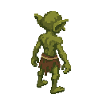

Rebirth goblin selected references
Original A and owner-accepted rear three-quarter still. Both use 128×128 canvases. No complete directional animation set.
Diagonal away

Native size
Reference index · Style and recreation notes · Original submitted A prompt